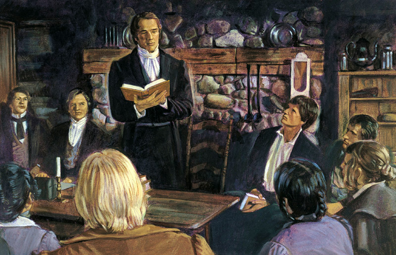
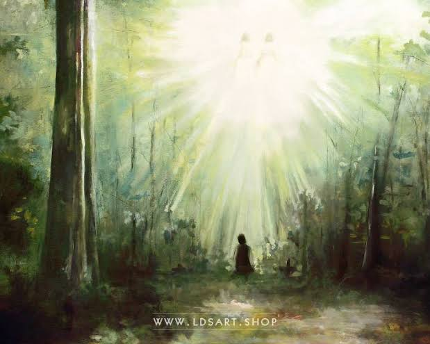
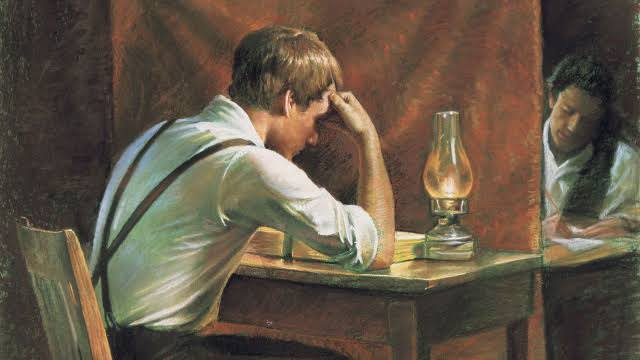
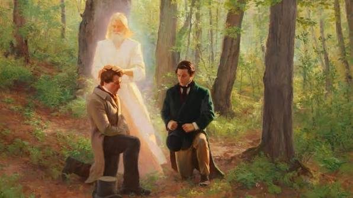
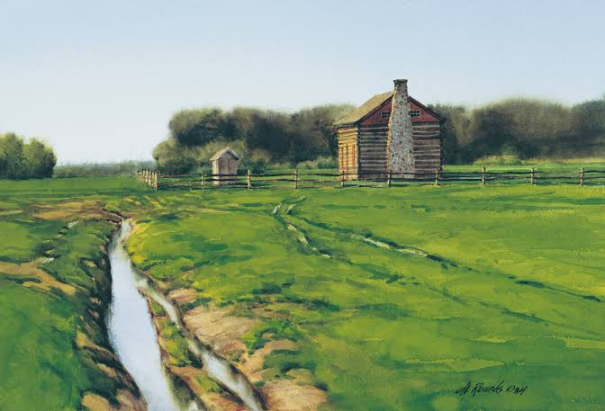
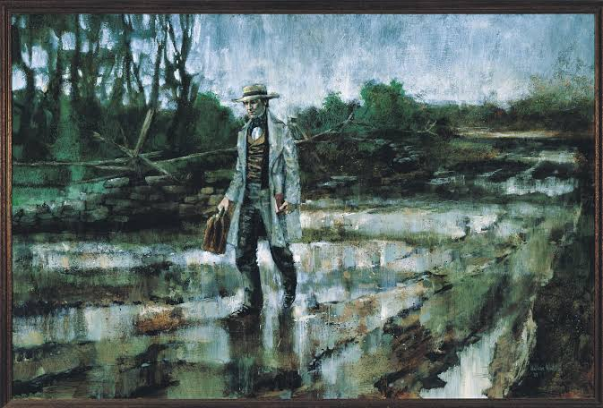

"In the spring of the year, while in a state of great distress over the welfare of his immortal soul... the Lord opened the heavens upon me and I saw the Lord and he spake unto me saying Joseph my son thy sins are forgiven thee."
Let the inhabitants of the earth rejoice, for the heavens are no longer sealed. The Lord God hath spoken from the heavens unto His servant Joseph Smith, Jun., calling him as a seer, a translator, a prophet, and an apostle of Jesus Christ.
Read More
"A great and marvelous work is about to come forth unto the children of men."
The Book of Mormon, a record of the fallen people of the Americas, hath been brought forth from the dust. Written upon plates of gold and hidden up unto the Lord by ancient prophets, it contains the fulness of the everlasting Gospel as delivered by the Savior to the ancient inhabitants of this land.
Read More
"The Lord hath appointed two elders to lead His Church, having bestowed upon them the Holy Priesthood and the keys of the ministering of angels."
Hearken, O ye people of the earth. The Lord hath called Joseph Smith, Jun. as First Elder, and Oliver Cowdery as Second Elder of the Church of Christ. Both received the holy priesthood under the hands of heavenly messengers.
Read More
"The long night of darkness hath ended, and the ancient order is restored."
The Church of Christ was regularly organized and established, agreeable to the laws of our country, by the will and commandments of God, on the sixth day of April, in the year of our Lord one thousand eight hundred and thirty. The same gifts, ordinances, and blessings enjoyed by the primitive saints are now restored unto the children of men.
Read More
"And thou shalt declare glad tidings, yea, publish it upon the mountains, and upon every high place, and among every people that thou shalt be permitted to see." — Book of Commandments, Chapter 20, received April 1830
Among the earliest servants of this work, Samuel H. Smith went forth bearing copies of the Book of Mormon, becoming the first missionary of the restored Church of Christ.
"a piller of fire light above the brightness of the sun at noon day come down from above and rested upon me... and I saw the Lord" (Joseph Smith History, circa Summer 1832)
"God ministered unto him by an holy angel, whose countenance was as lightning, and whose garments were pure and white" (Articles and Covenants of the Church of Christ, 1830)
"...the reception of the holy Priesthood by the ministring of Aangels to administer the letter of the Gospel" (Joseph Smith History, circa Summer 1832)
"Written and sealed up, and hid up unto the Lord, that they might not be destroyed; to come forth by the gift and power of God" (Title Page, Book of Mormon, 1830)
"The rise of the church of Christ in these last days, being one thousand eight hundred and thirty years since the coming of our Lord and Savior Jesus Christ in the flesh" (Articles and Covenants of the Church of Christ, 1830)
"And thou shalt declare glad tidings, yea, publish it upon the mountains, and upon every high place, and among every people that thou shalt be permitted to see." (Book of Commandments, Chapter 20, received April 1830)
If thy heart doth desire to know the truth of these things, we entreat thee to travel unto upstate New York. Seek out Joseph Smith, Jun. or any elder of the Church of Christ.
Contact Us